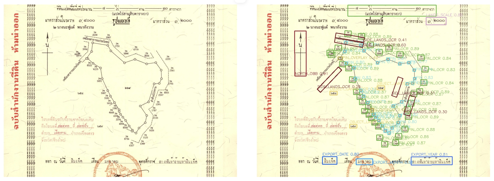
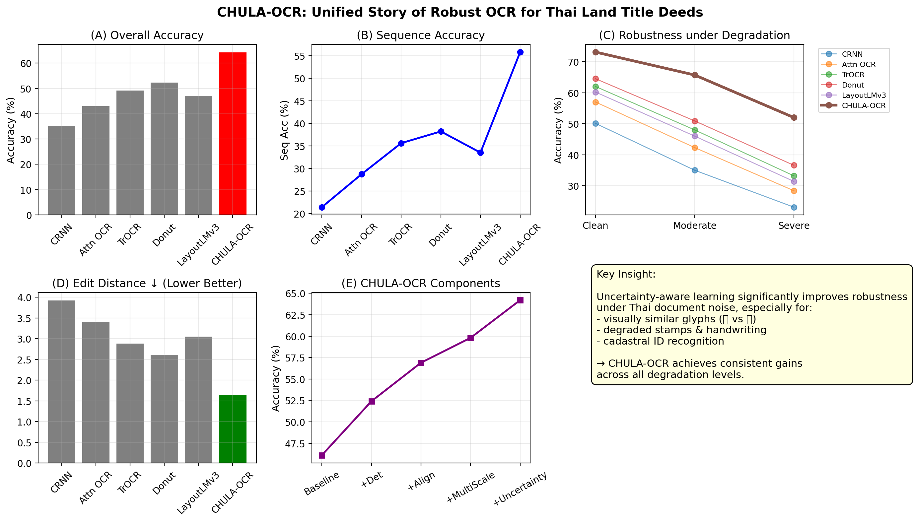
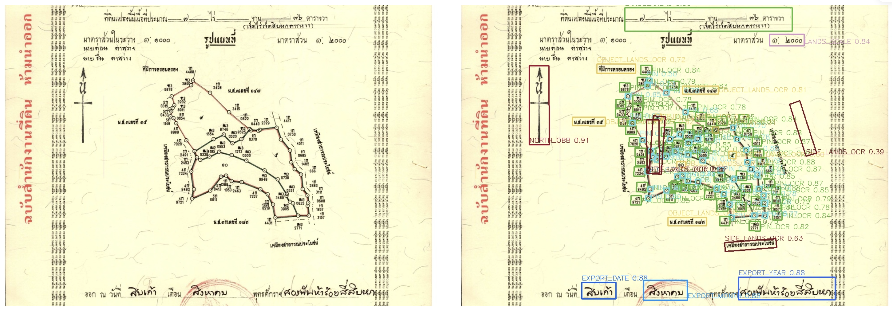
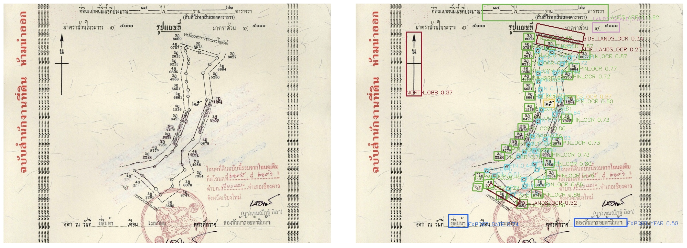
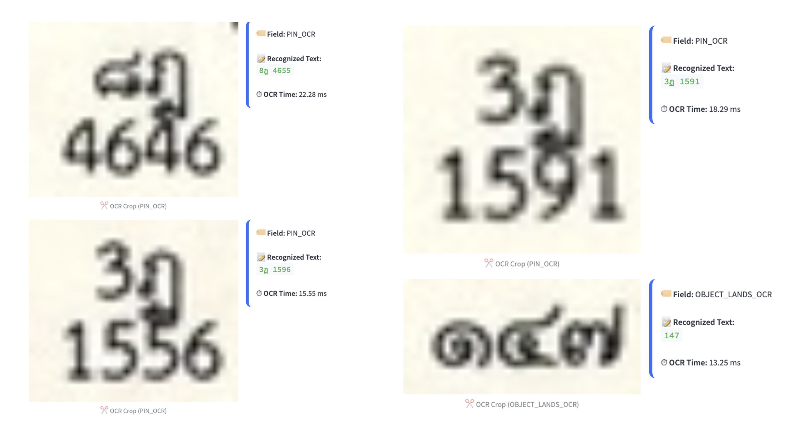
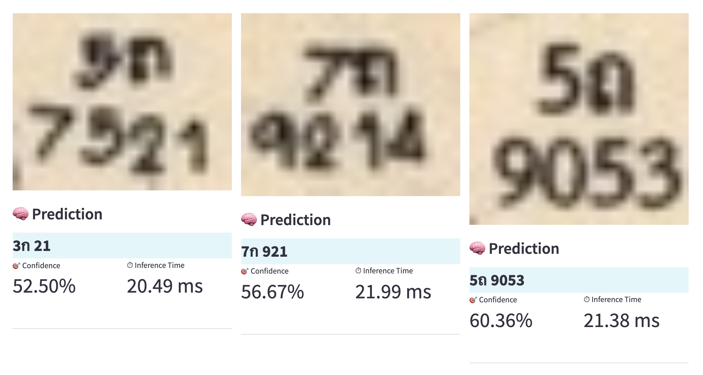
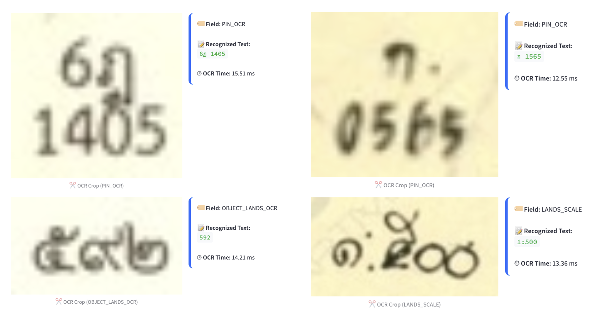
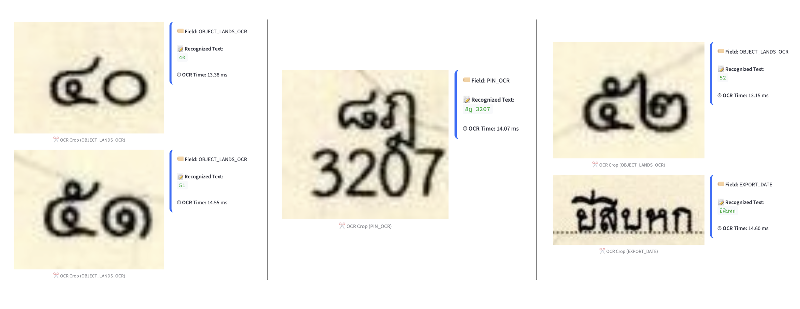

Land title deed #01
Uncertainty-aware robust OCR for digitizing land title deeds
Chulalongkorn University
Every prediction carries a confidence score. Values come from sampled CHULA-OCR outputs on degraded deed crops.
OCR for legal cadastral documents remains extremely challenging under severe real-world degradation.
Existing OCR systems fail under handwriting overlays, faded scans, official stamps, blur, and layout corruption.
Even minor recognition errors can produce critical legal inconsistencies in document digitization systems.
CHULA-OCR introduces uncertainty-aware perception for robust document intelligence under real operational constraints.

Robust OCR through uncertainty-aware structured perception.
Detect unreliable visual regions under severe degradation, handwriting contamination, and scanning artifacts.
Suppress noisy document patterns including blur, occlusion, official stamps, and structural corruption.
Preserve cadastral formatting consistency for reliable downstream legal verification.
CHULA-OCR outperforms existing OCR baselines on every measure across challenging cadastral document benchmarks.
| Method | OCR accuracy ↑ | NED ↓ | Cadastral match ↑ |
|---|---|---|---|
| CRNN | 61.3 |
5.42 | 48.1 |
| TrOCR | 71.4 |
4.82 | 57.2 |
| PARSeq | 74.1 |
3.94 | 63.5 |
| CHULA-OCR (ours) | 92.6 |
1.64 | 91.7 |
Real-world OCR inference under severe cadastral degradation.
Thai cadastral documents are one of the most hostile environments for computer vision. Boundary markers (survey pins), land parcel annotations, official stamps, faded ink, handwritten overlays, and dense spatial clutter create a detection challenge unlike anything in standard document AI benchmarks. Our CHULA model tackles this head-on, detecting every pin, boundary segment, and cadastral object under real operational conditions.



This work builds directly on CHULA, our first-phase system for detecting and localizing cadastral objects in Thai land title deeds. Together, the two projects form one AI pipeline designed to digitize Thailand's 30+ million land records. Follow the first work in the series at kaopanboonyuen.github.io/CHULA.
Once cadastral objects are detected, CHULA-OCR reads the handwritten and printed alphanumeric labels attached to each survey pin. These labels are unique parcel identifiers and must be read with near-perfect accuracy to feed downstream land registry systems. The challenge is severe: blurred crops, mixed Thai numerals, inconsistent inking, and extreme variation in handwriting across decades of historical documents.




CHULA-OCR is engineered as a production-ready AI system for Thailand's Department of Lands. By digitizing pin labels at scale, it enables searchable, verifiable, and legally auditable land records, turning decades of paper archives into a living national cadastral database.
Designed for public infrastructure at the Department of Lands, Thailand, supporting nationwide digitization of land title deeds to modernize public services and strengthen national land administration.
Enable scalable cadastral digitization for government administrative systems.
Improve reliability and consistency in official legal document processing.
Reduce manual workload in large-scale document archival pipelines.
Support AI-driven transformation for governmental digital services.
Robust OCR for legally sensitive documents needs more than stronger recognition models. It needs uncertainty-aware perception grounded in operational constraints.The CHULA-OCR takeaway
If CHULA-OCR is useful for your research, please cite the IEEE Access paper.
@article{panboonyuen2026chulaocr,
title = {{CHULA-OCR}: Uncertainty-Aware Robust OCR for Digitizing Land Title Deeds},
author = {Panboonyuen, Teerapong},
journal = {IEEE Access},
year = {2026},
doi = {10.1109/ACCESS.2026.3742999}
}